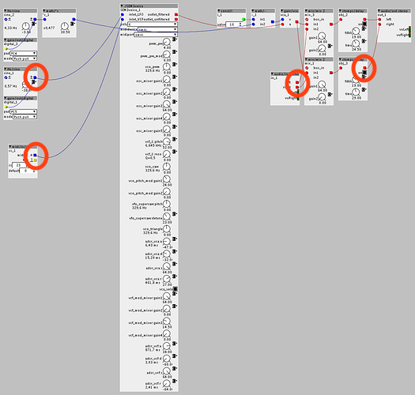
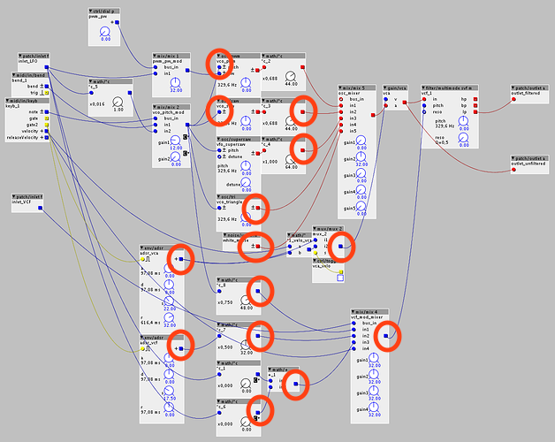

My polyphonic Axoloti-based synthesizer SEM-3 is finished! Have a look at this machine and listen to the first sound on YouTube 
SEM-3 Synthesizer finished
smrozek
#1
the19thbear
#2
Great job!! I want more info on the building part! midi knobs or analog pots? What are the 2 jab ports on the back doing? Etc etc:)
midi knobs or analog pots? What are the 2 jab ports on the back doing? Etc etc:)
smrozek
#3
Here are some details about my SEM-3 called synthesizer. It's the third synthesizer I have build in the meantime. That's where the "3" is coming from. The keyboard was taken from an old Roland ED PC-180A master keyboard. So it has 48 touch sensitive keys and a pitch and modulation bender and a plug for a sustain foot switch. The MIDI data goes into a self made triple MIDI interface for the Arduino Mega 2560. One internal MIDI interface is reserved for an optional sampling module. One MIDI I/O port you can find on the back of the synthesizer. Another MIDI port sends data to the Axoloti core. All analog pots are connected to a self made analog multiplexer board (4 * 74HC4051) which is connected to the Arduino. So are the 2*16 char LCD, a digital encoder pot and two buttons. Two LEDs are connected to the Axoloti and can display the LFO frequency and i.e. act as a peak meter. The Arduino does MIDI merging and is responsible for reading the pots and reads and stores sound settings which are send via MIDI control change data to the Axoloti (and optional to the sampling board). The synthesizer has stereo output plugs. The two USB ports are for firmware updates of the Arduino project and the Axoloti patch. The firmware is still work in progress but as you can see the basic functionality is given. Currently my Axoloti patch allows 6 voices at about 97% cpu load.
{kind=link}
the19thbear
#4
Share that axoloti patch or it didnt happen;)
Looks like a really nice project. Sometime in the future(once i settle on a axoloti patch and have done the layout for the knobs), i plan on doing a multiplexer board as well, but probably the Ainser64.
Keep on keepin on:)
bgreeves
#5
@smrozek I really really like the sound of this. Would you be so kind as to post your patcher? I'm very new to Axoloti and would love to see what techniques you used.
smrozek
#6
{kind=link}
{kind=link}
lokki
#7
if you make sure that all red connections go downwards and from left to right if possible, you could save some sram and maybe even fit a 7th or 8th voice in there...
Could yo please clarify?
I'm working on a smilar project that would need some optimisation to get some more voices and what you wrote got my attention!
jaffasplaffa
#9
To answer a question I wasnt asked..... 
cables going upwards uses unecessary resources. Good practice is to ALWAYS having all cables either go from left to right or from top to bottom. That the order Axoloti uses:
{kind=link}
I see a lot of cables going upwards, especially the red ones are the most heavy ones. You can easily save alot m fixing those issues:


djsoulmachine
#10
Thanks a lot for your illustrated answer! I'm pretty new to Axoloti, I was aware of that rule but I don't think I was using it the proper way!
Here's the project I'm working on, I really think it is simpler that many other projects here but I cannot achieve a polyphony upper to 4 voices...
From what I read, this could free some SDRAM but do you think it can save some DSP % ?
Thanks a lot!
jaffasplaffa
#11
To be honest I have never used Axoloti as a polyphonic instrument, so I dont know much about how the polyphony works and how far you can push it.